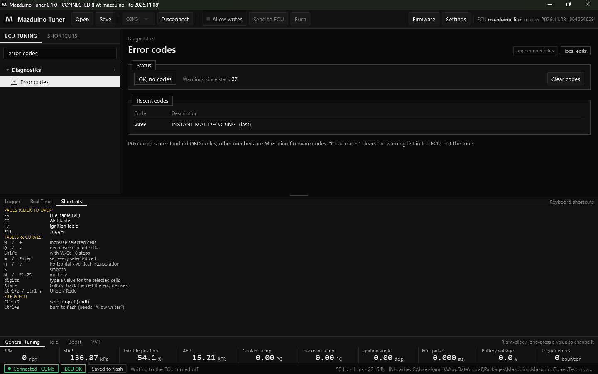
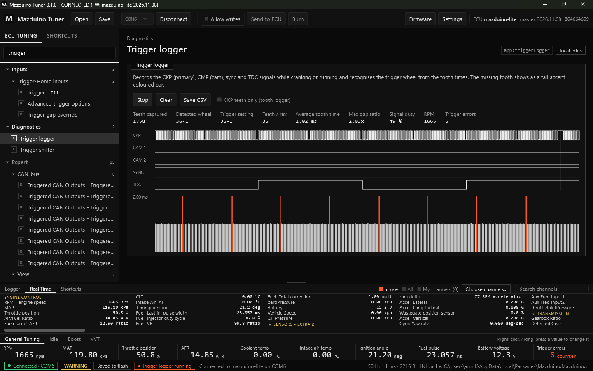
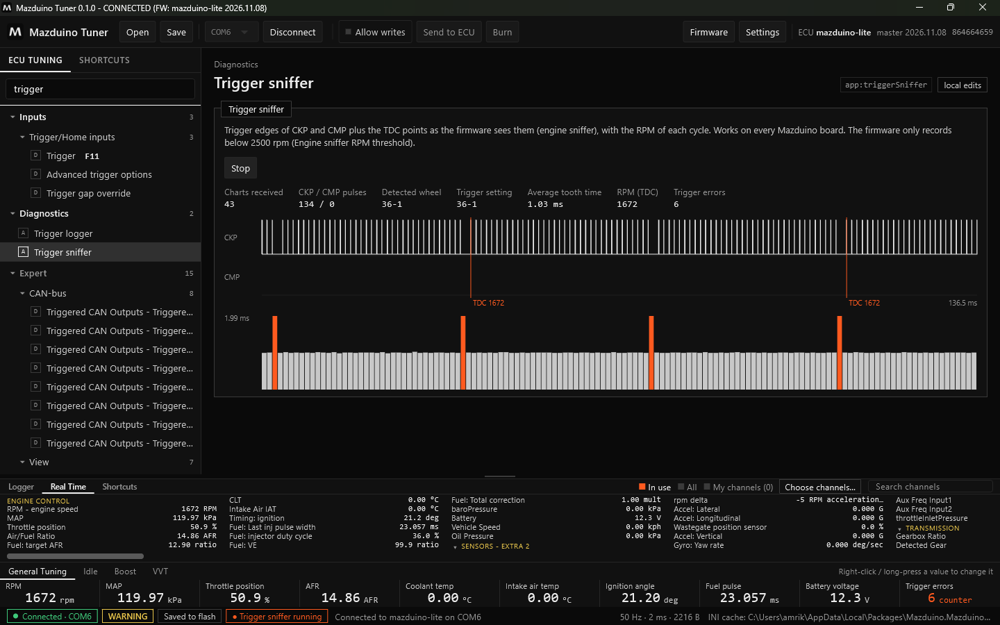

Terakhir diperbarui: 9 November 2026
Diagnostik di Mazduino Tuner¶
Alat diagnostik ada di grup Diagnostics pada menu. Ketik namanya di pencarian menu untuk membukanya dengan cepat.
| Alat | Fungsi |
|---|---|
| Error codes | Kode error dan peringatan dari ECU |
| Tune problems | Pemeriksaan pengaturan yang tidak wajar |
| Temporary cylinder shutoff | Mematikan satu silinder untuk mencari silinder yang lemah |
| Trigger logger | Merekam sinyal CKP/CMP dan mengenali pola roda trigger |
| Trigger sniffer | Tepi sinyal trigger dan titik TDC seperti yang dilihat firmware |
| Trigger oscilloscope | Bentuk tegangan sinyal CKP/CMP (jika didukung ECU) |
| CAN analyzer | Melihat lalu lintas CAN lewat ECU |
Selain itu grup Diagnostics juga berisi halaman tes output dari firmware (injektor, koil, relay, dan lain-lain).
Alat yang membebani ECU
Trigger logger, trigger sniffer, dan oscilloscope membuat ECU dan USB sibuk. Selama berjalan, status bar menampilkan penandanya. Jika Anda pindah halaman saat alat masih berjalan, aplikasi menanyakan apakah alat dihentikan.
Error Codes¶

- Status: OK, no codes jika tidak ada error aktif, beserta jumlah peringatan sejak ECU menyala.
- Recent codes: kode terakhir dengan keterangannya.
- Kode P0xxx adalah kode OBD standar; angka lain adalah kode firmware Mazduino.
- Clear codes menghapus daftar peringatan di ECU, bukan tune.
Tune Problems¶
Memeriksa tune dan menampilkan pengaturan yang tidak wajar atau saling bertentangan, beserta tingkat kepentingannya.
Temporary Cylinder Shutoff¶
Memutus bahan bakar dan pengapian satu silinder untuk mencari silinder yang lemah:
- Saat idle, RPM turun banyak = silinder sehat.
- RPM hampir tidak turun = silinder bermasalah (injektor, busi/koil, kompresi).
- Setiap silinder menyala kembali sendiri setelah 10 detik.
Syarat: Allow writes aktif, mesin menyala, dan injeksi sequential. Firmware lama mungkin belum mendukung fitur ini.
Trigger Logger¶

Merekam sinyal CKP (primary), CMP (cam), sync, dan TDC saat cranking atau mesin menyala, lalu mengenali pola roda trigger dari waktu antar gigi. Gigi yang hilang (missing tooth) tampil sebagai batang tinggi berwarna oranye.
- Klik Start, lalu crank atau nyalakan mesin.
- Lihat Detected wheel dan bandingkan dengan Trigger setting. Jika berbeda, aplikasi memberi peringatan untuk memeriksa pengaturan trigger atau sensor.
- Save CSV menyimpan rekaman; Clear menghapusnya.
Centang CKP teeth only (tooth logger) untuk merekam gigi CKP saja.
ECU mengirim rekaman per buffer. Jeda waktu di antara dua buffer tidak terekam, jadi digambar pendek dengan garis tipis vertikal sebagai penanda. Garis itu bukan berarti sinyal hilang.
Trigger Sniffer¶

Menampilkan tepi sinyal CKP dan CMP serta titik TDC seperti yang dilihat firmware (engine sniffer), dengan RPM setiap siklus. Bisa dipakai di semua board Mazduino.
- Klik Start. Setiap siklus mesin yang diterima menambah Charts received.
- Garis oranye TDC menandai titik mati atas silinder 1 beserta RPM saat itu.
- Batang di bawah adalah waktu antar gigi; batang oranye adalah gigi yang hilang.
- Bandingkan Detected wheel dengan Trigger setting, dan perhatikan Trigger errors.
Firmware hanya merekam di bawah batas RPM engine sniffer. Jika RPM di atas batas itu, halaman ini memberi tahu Anda.
Trigger Oscilloscope¶
Menampilkan bentuk sinyal analog (tegangan) input CKP/CMP dari ADC ECU, untuk memeriksa sensor VR/hall, noise, dan level tegangan. Halaman ini hanya muncul jika hardware dan firmware ECU mendukungnya.
CAN Analyzer¶
Menampilkan lalu lintas CAN lewat controller ECU sendiri, tanpa adapter tambahan.
- Start menyalakan pencetakan CAN di RAM ECU saja. Pengaturan ini tidak disimpan ke flash dan dikembalikan saat Stop, saat halaman ditutup, atau sebelum Burn.
- Mode ini untuk bus yang sepi. Di bus yang ramai sebagian frame bisa hilang.
- Waktu frame adalah saat data tiba di PC, jadi perkiraan.
- Untuk menyadap jaringan mobil pabrikan, nyalakan dulu Listen mode di pengaturan CAN agar ECU tidak mengganggu bus.
- Jika CAN read di tune mati, frame masuk tidak akan terlihat.